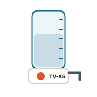

Boiling water unitKochendwassergerät
TV-K5
139 €net list priceNetto-Listenpreis
Wall-mounted above the sink. Heats 0.5–5 L on demand up to boiling point – for tea, coffee and cooking.
Übertischgerät über der Spüle. Erhitzt 0,5–5 L bei Bedarf bis zum Sieden – für Tee, Kaffee und Kochen.
- Design
- Bauart
- open (unpressurised), above sink
- offen (drucklos), Übertisch
- Volume
- Inhalt
- 0,5–5 L
- Power / supply
- Leistung / Anschluss
- 2,0 kW · 1~/N/PE AC 230 V · Schuko plugSchuko-Stecker
- Tapping points
- Entnahmestellen
- 1 – own swivel spout
- 1 – eigener Schwenkauslauf
- Temperature
- Temperatur
- 35 °C to boiling
- 35 °C bis Kochstufe